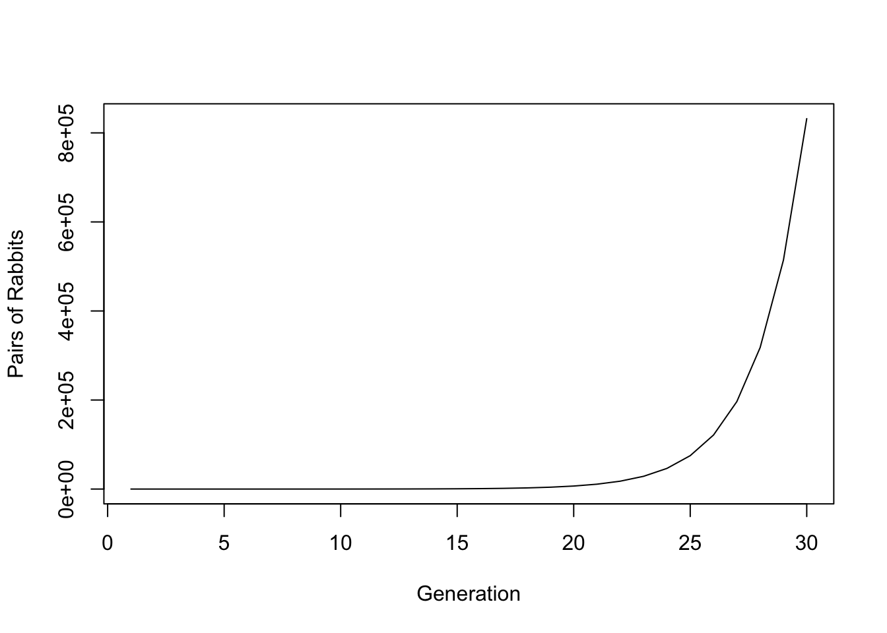
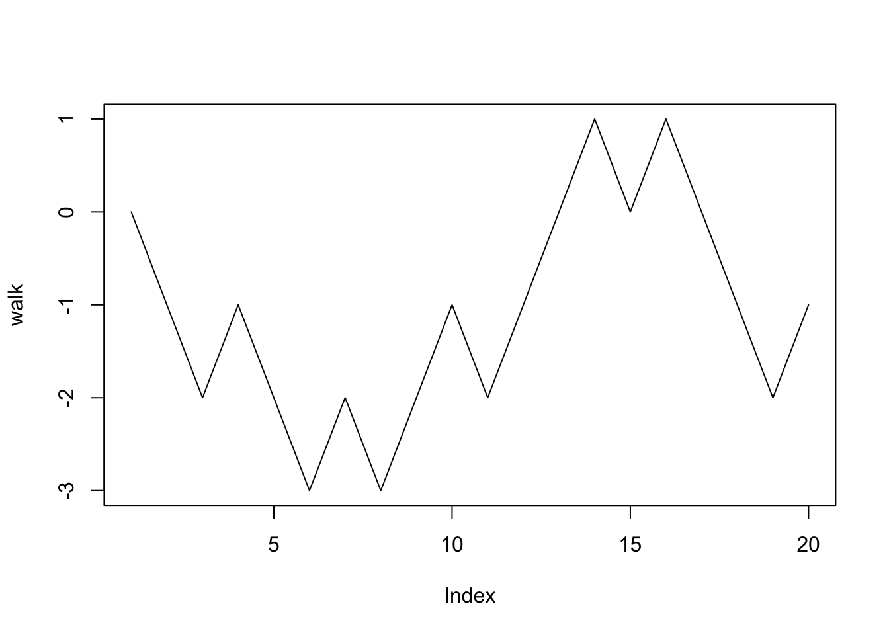
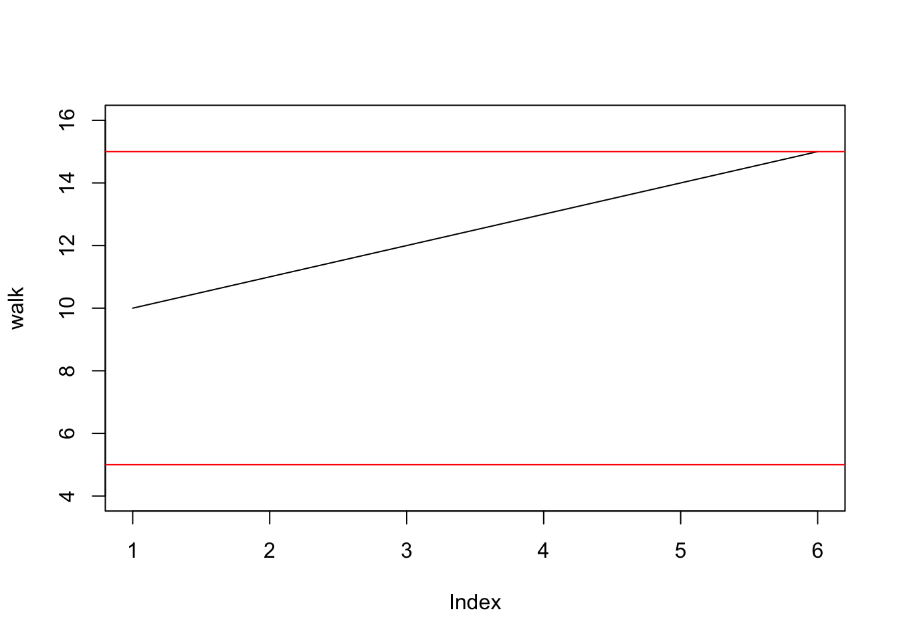
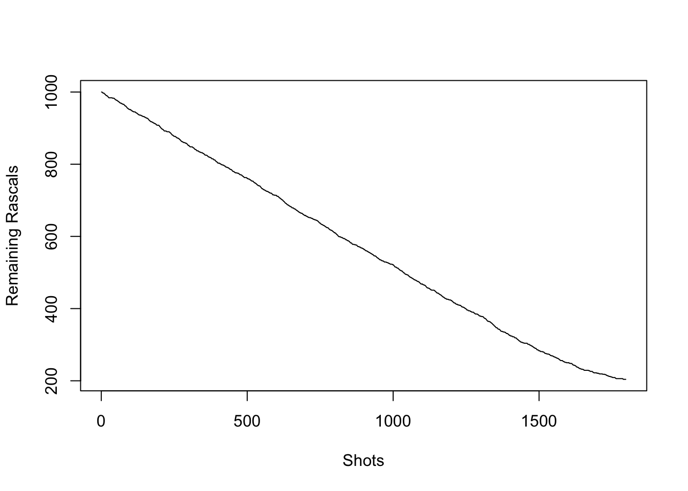
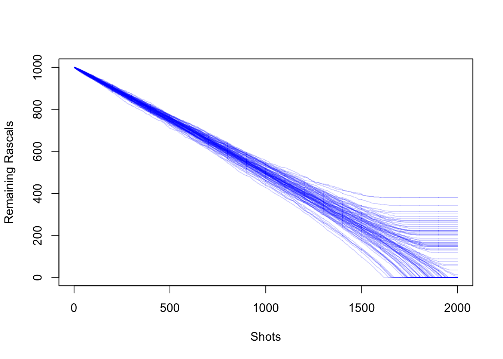
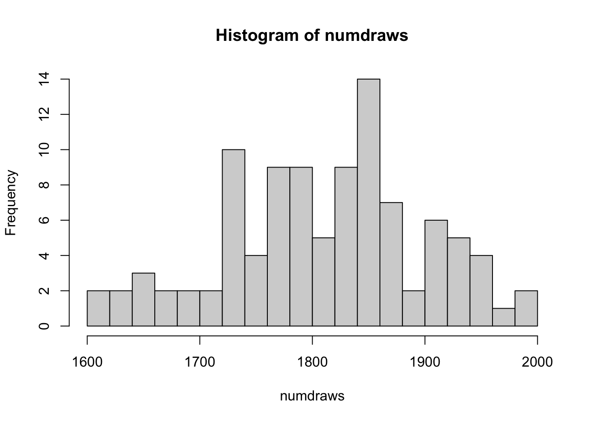

In the last section, we focused on what many would (mistakenly) consider the meat of a good data science class: pretty figures. That’s all well and good, but oftentimes it’s necessary to work with data at the ground level. Doing so requires asking some questions from flow control. For instance, do we want to cycle through all the elements of my dataset? Or are we only considering those elements that pass a certain condition? Maybe we keep want to keep looking until a particular condition is fulfilled. Putting these logical constraints in a programmable form is the focus for this section, which we’ll visit through examples. In particular, we’ll cover the nuts and bolts of three central concepts of programming in R (or any language, really): if statements, for loops, and while loops.
A function is essentially something that takes something in, and returns something else. The possible stuff that can go into a function (inputs) is called the domain, and the collection of possible things that the function can return (outputs) is called the range.
Usually the first thing you write in a programming class is the Hello World script. It simply prints out the statement “Hello World”.
Hello = function(){
return('Hello world!')
}
Hello()## [1] "Hello world!"Let’s take a look at each of the pieces here. On the first line, to the left of the equal sign, is where you name your function. In this case, our function is named Hello (it’s case sensitive, by the way), although you can name it whatever you want (well, almost whatever. You can’t start a variable with a number, for instance.) On the right hand side we simply write function, and inside parentheses we place the inputs, those variables that the function will use. In our case, there are no inputs! This is perfectly fine. Later examples will show functions that use variables.
After the inputs are typed in, we add a left brace. Rstudio will automatically place a right brace next to it. Inside your braces, you will write all needed code that gives your output. In this case, we simply want the statement Hello world. The output is what your function will return. Appropriately, place your output inside the return function.
Now let’s look at a simple function which takes in an argument. We’ll call this the successor function
successor = function(n){
m = n+1
return(m)
}
successor(13)## [1] 14For this function, we take an input of \(n\) and return an output of \(n+1\). Yes, we could have just written return(n+1) and saved ourselves a line, but there’s an important point to be made.
Q: What is the value of \(m\)?
Typing m into the console gives us an error!
But why? If \(n= 13\), then surely \(m = 14\), right? Actually, no. The variable \(m\) is what’s known as a local variable. The means that \(m\) is only defined within the context of the function successor. You can think of the function as being secretive, not allowing you to know what variables it’s using while it’s computing an output. In fact, we can define \(m\) outside of the function, and nothing will go wrong. In this case, \(m\) would be a global variable. To see this:
successor = function(n){
m = n+1
return(m)
}
m = 12
successor(6)## [1] 7m## [1] 12Global variables can be called on in a function, however.
m = 6
addmval = function(n){
m = m+1
k = n+m
return(k)
}
addmval(6)## [1] 13m## [1] 6Q: Why isn’t \(m = 7\)?
Any “redifining” of a variable done within a function is a local operation. In other words, given our current notation for variable assignment, we cannot update a global variable value.
It is not recommended to have a function modify a global variable. If you insist, however, we can do the following:
m = 6
addmval2 = function(n){
m <<- m+1
k = n+m
return(k)
}
addmval2(6)## [1] 13m## [1] 7An if statment asks a yes or no question. If the answer is yes, then one block of code is followed. If no, then another block is followed instead.
Q: Use an if statement to generate a number that is one 1 with probability 1/2, and 0 with probability 1/2.
if (runif(1)<.5){
0
}else{
1
}## [1] 0What going on here? Your yes or no question will be wrapped inside if(). In our case, we’re asking whether runif(1), a randomly generated number between 0 and 1, is less than or greater than .5. Certainly, there’s a 50% chance that the answer is yes. The code which runs when the answer to your if statement is yes is then contained in curly braces. In our case, we simply return 0.
If the answer to our question is no, we can simply write nothing more, and our code will simply do nothing. On the other hand, if you want a block of code to run, you will else an else statement. Make sure to place else on the same line as the closing brace of if. In our case, if the answer is no, we produce a 1.
For convenience, we can wrap this argument into a function. In fact, we’ll generalize, and simulate a biased coin that returns a 1 with probability \(p\) and a 0 with probability \(1-p\):
flip = function(p){
if (runif(1)<p){
1
}
else{
0
}
}
flip(.7)## [1] 0flip(.7)## [1] 0flip(.7)## [1] 1flip(.7)## [1] 0Our function flip is a function of one variable \(p \in [0,1]\). Because this function uses random numbers, we should not expect the same answers each time we run this function.
Our last command looked quite clunky. What if we wanted to repeat the flip 100 times? Would we have to copy/paste flip(.7) 100 times? What if we wanted a million flips? Repeating blocks of code can be expressed through the convenience of or loops. For loops cycle through a set of values for a variable, and execute the under each instance of this variable. For example, here’s a simple code for summing the first \(n\) numbers
n = 100
s = 1
for (i in 2:n){
s = s +i
}
s## [1] 5050Let’s go through this for loop step by step. The statement wrapped in parentheses next to for tells us what collection of numbers, or strings, or general objects that we will “loop” through. In our cases, we are going to consider the number i at \(i = 2\), then \(i = 3\), \(i = 4\), and so on until we reach \(i = 99\) and \(i = n = 100\). For each value of \(i\), we perform the code wrapped in curly braces. So in words, our code does the following:
The Fibonacci sequence satisfies the following relation
\[\begin{equation} F_1 = 1, \quad F_2 = 1, \qquad F_k = F_{k-1}+F_{k-2} \hbox{ for } k\ge 3. \end{equation}\]
This sequence comes from an idealized case of population dynamics from the Italian mathematician Leonardo de Pisa, also known as Fibonacci. The idea is that \(F_k\) denotes pairs of rabbits after \(k\) generations. Each pair of rabbits generates a new pair of rabbits after having grown up for a single generation, and rabbits (in this idealized model) never die. The number of pairs of rabbits are there in the \(k\)th generation equal the number from the previous generation \(F_{k-1}\), plus the number of rabbits created from mature rabbits, \(F_{k-2}\) (why is this the case?).
Q: Write a function that computes the nth Fibonacci number. Plot \(F_k\) for the first \(k = 30\) generations.
#Initialize
Fibb = rep(0,30)
Fibb[1] = 1
Fibb[2] = 1
for (i in 3:30){
Fibb[i] = Fibb[i-1]+Fibb[i-2]
}
Fibb[1:5]## [1] 1 1 2 3 5plot(Fibb, xlab = 'Generation', ylab = 'Pairs of Rabbits', type = 'l')
This graph explains why the term “breed like rabbits” makes sense. Under this model for population dynamics, the number of rabbits becomes huge, and quick.
Q: Search online for an explicit formula for the \(n\)th Fibonacci number. Write a function that uses this formula. Verify that both of your functions return the same number.
phi = (1+sqrt(5))/2
psi = 1-phi
Fibb2 = function(n){
(phi^n-psi^n)/sqrt(5)
}
Fibb[1:10]## [1] 1 1 2 3 5 8 13 21 34 55sapply(1:10, Fibb2)## [1] 1 1 2 3 5 8 13 21 34 55Q: What do you think the function does? fAlso, why do we call with square brackets, but not do the same with ?
The formula used above \[F_n = \frac{\phi^n-\psi^n}{\sqrt{5}}, \quad n \ge 1,\qquad \phi = (1+\sqrt 5)/2, \quad \psi = 1-\phi,\]
could be proved using an educated guess (or ansatz) about the form of the recurrence relation. In particular, we can guess \(F_k = c^k\), plug the guess into our recurrence, and derive a quadratic which shows \(c = \phi\) or \(\psi\). Upon inspection, the exact expression looks rather strange. Certainly, each \(F_k\) is a positive integer (there are no half rabbits), but we nevertheless see a factor of \(\sqrt 5\)!. Both \(\phi\) and \(\psi\) contain \(\sqrt 5\), so things work out and the answer is always a positive integer, but this fact is far from obvious if you were just given the formula.
A while loop will execute a block of code until a certain condition is fulfilled. The syntax is very similar to a for loop.
Let’s do an example for the random walk, often seen in probability theory and finance. The idea is the following, let \(X_0 = 0\) and define \(X_k\) recursively by \[X_k = X_{k-1}+ B_{k},\] where \(B_k\) takes the value 1 with probability 1/2, and -1 with probability 1/2. You can think of \(B_k\) as a random step. Let’s write a program for this random step, which is pretty close to the flip function we wrote before.
step = function(p){
if (runif(1)<p){
1
}
else{
-1
}
}Let’s take a look at some random walks. If we know how many steps we’d like to take, we can just write a for loops:
#number of steps
n = 20
#initialize positions as a vector of zeros
walk = rep(0,n)
for (i in 2:n){
walk[i] = walk[i-1]+ step(.5)
}
plot(walk, type = 'l')
Random walks serve as rudimentary models of stock prices. A common desire when investing is to invest at a certain amount, and then sell when a stock price hits a certain number. When this occurs is called a hitting time.
Suppose we buy a stock at $10, and that each time increment represents a day. Let’s run a simulation that stops the stock when either the stock is at $15 (hooray!) or $5 (agony!). This is where we will first use our while loop.
#Initial price
S = 10
#initialize positions as a vector
walk = c(10)
#the while statement
while ((S != 5) && (S != 15)){
S = S+step(.5)
walk = append(walk, S)
}
#plot function, including upper and lower limits
plot(walk, type = 'l', ylim = c(4,16))
abline(h = 5, col = 'red')
abline(h = 15, col = 'red')
Q: Can you write the conditional above using “or”s (given by “||”) rather than “and”s?
Pick a number, any number (well, make sure it’s a positive integer). Call it \(N\). Consider the following algorithm:
So, for instance, some iterates of this algorithm are \[\begin{align} \hbox{(Starting at 3)} \quad 3\rightarrow 10 \rightarrow 5 \rightarrow 16 \rightarrow 8 \rightarrow 4 \rightarrow 2 \rightarrow 1 \\ \hbox{(Starting at 7)} \quad 7 \rightarrow 22 \rightarrow 11 \rightarrow 34 \rightarrow 17 \rightarrow 52 \rightarrow 26 \\\rightarrow 13 \rightarrow 40 \rightarrow 20 \rightarrow 10 \rightarrow 5 \rightarrow 16 \\ \rightarrow 8 \rightarrow 4 \rightarrow 2 \rightarrow 1 \end{align}\]
A natural question is whether there exists a number that causes this algorithm to go on forever. Surprisingly, nobody knows the answer! It’s said that the Collatz conjecture is a black hole, causing mathematicians to spend a great deal of time looking for solutions and end up with nothing.
Q: Write a function Collatz(n) that returns the number of iterations that occur before the algorithm starting at \(n\) ends up at 1.
#A function that returns a length of the Collatz orbit starting at n
Collatz = function(n){
count = 1
while(n != 1){
#is n even?
if (n %% 2 == 0){
n = n/2
count = count+1
}else{
n = 3*n+1
count = count+1
}
}
count
}
#Run Collatz on 1:10000 using sapply
collvec = sapply(1:10000, Collatz)
#Histogram of Collatz orbits
hist(collvec, breaks= 100, xlab = "Length of Collatz Orbits", main = "Histogram of Collatz
orbits for first 10,000 numbers")Here, we have again used the sapply function. This creates a vector that applies a function to each value of a vector that you supply for the function. In our case, (1:10000, Collatz) gives us a vector where the first element is equal to Collatz(1), the second element is equal to Collatz(2), and so on.
The OK Corral model was introduced by the probabilists Williams and McIlroy in 1998. The model describes two group of outlaws caught in a random gunfight. Suppose we start with two groups, The Rascals and The Varmints, each having 100 members. In R, we can initialize with
R = 100
V = 100
Let’s suppose that shots occur in succession, one at a time. Each member has an equal probability to fire. If a Rascal is selected, he will shoot a Varmint, and if a Varmint is selected, he will shoot a Rascal. Given \(R\) Rascals and \(V\) Varmints, the probability that a Rascal is selected to shoot is \(p_R = R/(V+R)\), and the probability that a Varmint is selected is \(1-p_R = V/(V+R)\). Here’s a function that returns a 0 if a Varmint shoots and a 1 if a Rascal shoots.
V = 100
R = 100
whoshoots = function(V,R){
U = runif(1)
if (U > R/(V+R)){
0
}else{
1
}
}
whoshoots(V,R)## [1] 0To simulate a shot, and to show the new population, we type
shot = function(V,R){
a = whoshoots(V,R)
if (a == 0){
c(V,R-1)
} else{
c(V-1,R)
}
}
shot(V,R)## [1] 99 100Now let’s simulate a gunfight until one side is wiped out, and document the demise of the Rascals, plotting the total number of Rascals for each shot
V = 1000
R = 1000
counter = 0
totrasc = c(R)
while( min(c(V,R) != 0)){
z = shot(V,R)
V = z[1]
R = z[2]
counter = counter +1
totrasc = append(totrasc,R)
}
plot(totrasc, type = 'l', xlab = 'Shots', ylab = 'Remaining Rascals')
Now let’s plot 100 such paths.
vinit = 1000
rinit = 1000
paths = 100
rascalpaths = matrix(0,nrow = paths, ncol = vinit+rinit)
numdraws = rep(0,paths)
for (j in 1:paths){
V = vinit
R = rinit
counter = 0
rascalpaths[j,1] = rinit
while( min(c(V,R)) != 0){
z = shot(V,R)
V = z[1]
R = z[2]
counter = counter +1
rascalpaths[j,counter] = R
}
numdraws[j] = counter
#Fill in remaining steps
if (rascalpaths[j,counter] != 0){
rascalpaths[j,(counter+1):(vinit+rinit)] = rep(rascalpaths[j,counter], vinit+rinit-counter)
}
}
matplot(t(rascalpaths), type = 'l', col = rgb(0, 0, 1, alpha = .2),lty = 1, xlab = 'Shots', ylab = 'Remaining Rascals')
Note that when a rascal path is flat, then this means that the Rascals have won the gunfight. Let’s take a look at a histogram of the number of shots fired.
hist(numdraws, breaks = 20)
An absolutely remarkable result from Williams and McIlroy, in their short paper The OK Corral and the Power of the Law (A Curious Poisson-Kernel Formula for a Parabolic Equation) is that if the initial number of Rascals and Varmints are then same, then the expected number of survivors satisfies
\[ \mathbb E[S] \sim 2(3)^{1/4}\pi^{-1/2}\Gamma(3/4)r_0^{3/4} \] where
\[ \Gamma(s) = \int_0^\infty x^{s-1}e^{-x} dx, \quad s>0\] and \(r_0\) is the initial number of rascals. Also, \(\mathbb E[S]\) is the expected value of the random quantity \(S\). This means that if we ran the experiment many times and took the average number of survivors, we would have something very close to \(\mathbb E[S]\). Finally, we write \(f(x) \sim g(x)\) if \(f(x)/g(x) \rightarrow 1\) as \(x \rightarrow \infty\).
Let’s test if this result holds in our experiments:
#This gives a sample mean of our 100 experiments,
#which is an approximation of the expected value.
pathsampmean = mean(vinit+rinit-numdraws)
K = 3^{-1/4}*pi^{-1/2}*gamma(3/4)
guess = 2*K*vinit^(3/4)
pathsampmean/guess## [1] 1.008269Not bad!